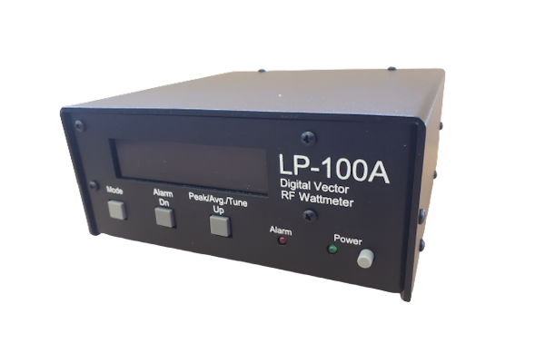

QK-LP100A
Real-time power, SWR, and impedance monitoring for the TelePost LP-100A

A native macOS control and monitoring application for the TelePost LP-100A Digital Vector RF Wattmeter. Real-time power and SWR gauges, impedance display, automated antenna frequency sweeps with Smith chart visualization, and Hamlib rig integration — all in a single, purpose-built app for Apple Silicon.
About
QK-LP100A brings the TelePost LP-100A Digital Vector RF Wattmeter to your Mac with two operating modes. VCP mode provides real-time power and SWR gauges with impedance readout via serial or TCP. Plot mode automates frequency sweeps using Hamlib rig control, charting power, SWR, and impedance on a Smith chart across your antenna's bandwidth.
Links
Requirements
| macOS |
macOS 26 (Tahoe) or later Apple Silicon (M1 or newer) |
Getting Started
| macOS |
Open the DMG and drag to Applications. Signed and notarized — no Gatekeeper warnings. |
Development & Feedback
QK-LP100A is under active development. If you run into a problem or have a suggestion, we'd love to hear from you.
View Current Open Issues on GitHub